Theme
The theme is fresh flavor and fast energy. All of the assets connect back to Celsius through fruit, drink visuals, bright colors, and clean product-focused composition.
Workshop 06 · CELSIUS Energy Drink Animation
Not an official advertisement
“A clean, flashy product reveal using fruit, bright visuals, motion blur, and a text mask.”
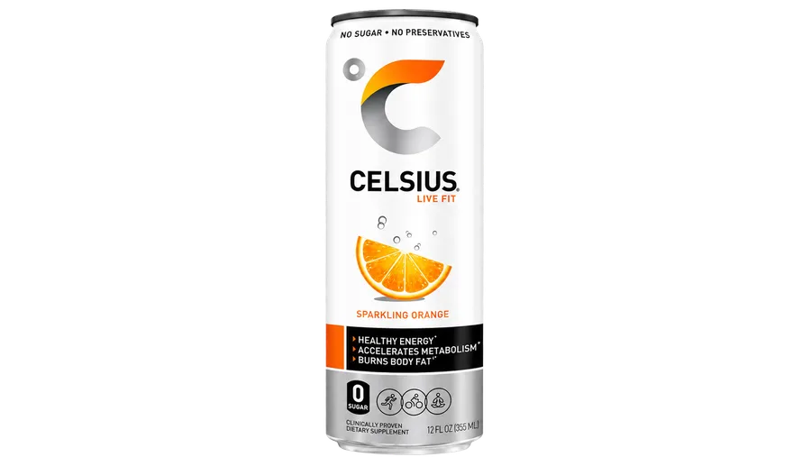
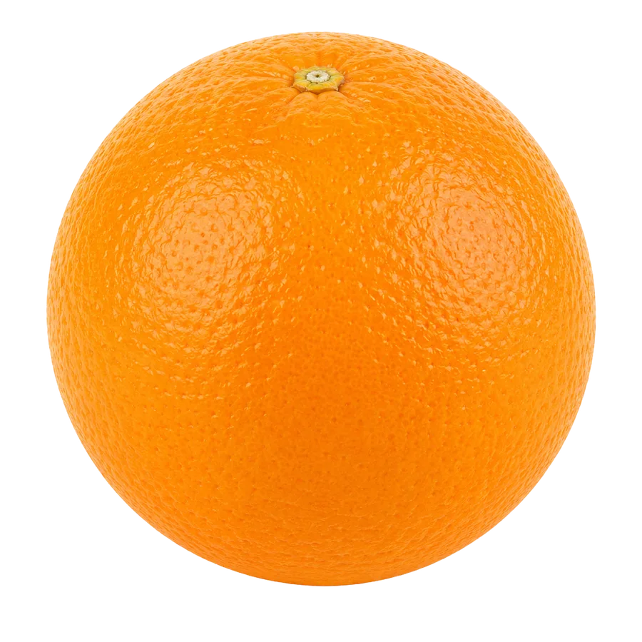
I created a short three-second ad for Celsius Energy Drink. It focuses on a clean, flashy product reveal using fruit, bright visuals, motion blur, and a text mask to feel like a modern social media ad. The typography throughout the ad uses the Futura font to give it a clean, modern, and bold commercial look.
The ad begins with a title card with a fruit background masking the text, then transitions into the main Celsius product shot. The first part reveals the brand name using a mask. The ad finishes while the product remains on screen as the main focus, with an orange rolling across the screen with our tag line.
The theme is fresh flavor and fast energy. All of the assets connect back to Celsius through fruit, drink visuals, bright colors, and clean product-focused composition.
The target audience is young adults, students, gym-goers, and people who want a quick energy boost during the day. The ad is designed to feel quick, colorful, and eye-catching, similar to something that could be used on social media.
The visual style is clean, bright, and energetic. The animation uses movement, blur, scale changes, and opacity changes to make the edit feel more polished. Motion blur is used heavily because the project is only three seconds long, and without it the fast movement looked too sharp and choppy. The use of Futura font helps reinforce a modern, professional advertising style inline with Celsius’s other branding and marketing.
This advertisement could be used as a:
“For this storyboard, I worked on four images that represent the three major moments of the advertisement: the title card, the drink transition, and the rolling orange with the final end tag. I wanted to make something fresh and short but visually appealing for an energy drink I like.”
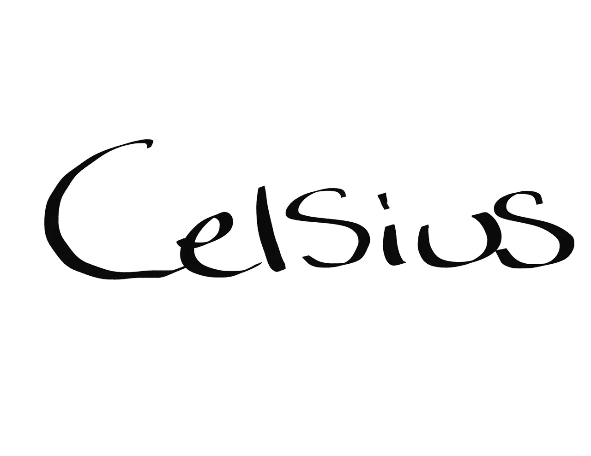
This frame shows the opening title card with the Celsius text visual. It introduces the product name in a clean, bold, and fresh way. The text appears in Futura and is revealed using a fruit mask, connecting the typography to the fruit flavor theme of the ad.
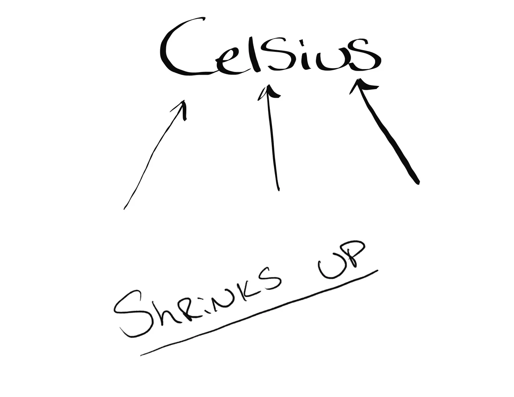
This frame shows the intro text shrinking away to transition into the main scene. The movement uses scale, opacity, and motion blur to make the text feel like it is quickly pulling back from the viewer. This creates a fast scene change while keeping the motion connected to the opening title card.
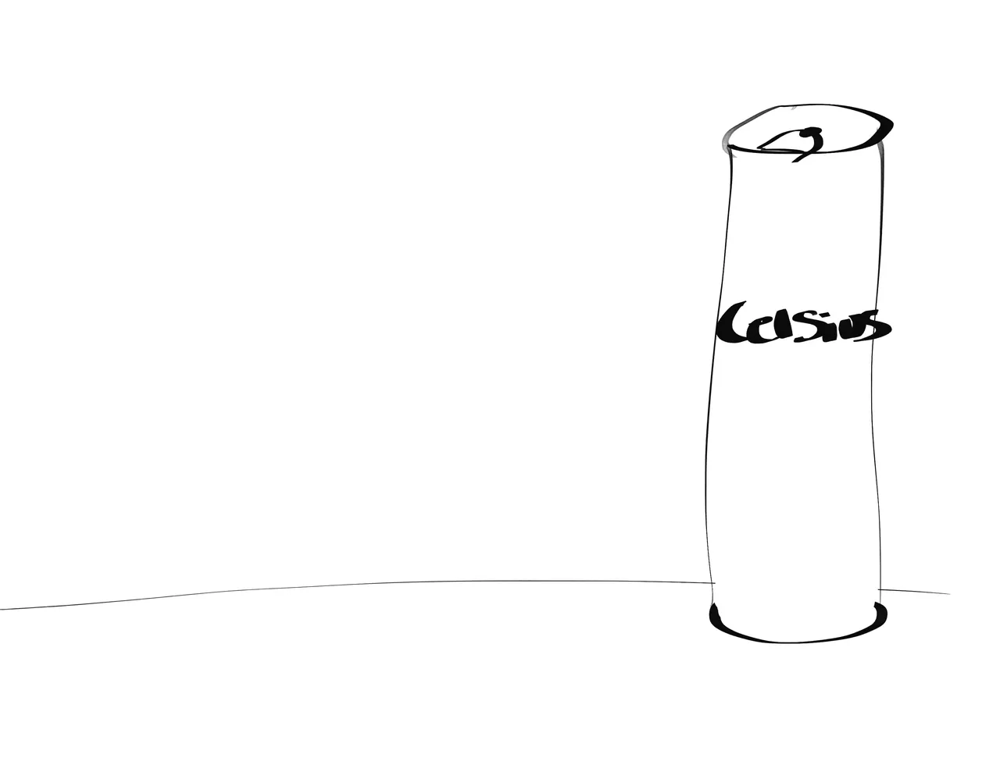
This frame shows the Celsius can and tabletop coming into view. The product becomes the main focus of the advertisement as it moves into position. Scale, position, opacity, and motion blur are used to make the product reveal feel smooth and energetic instead of stiff.
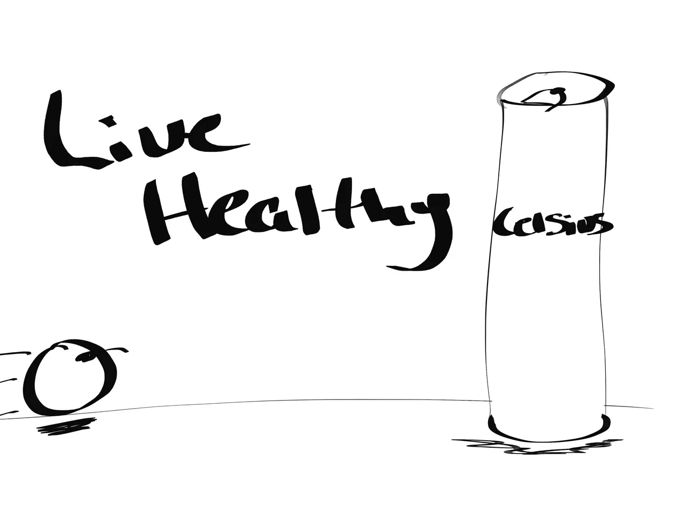
This frame shows the final moment of the ad, including the rolling orange, the Celsius product, and the tagline “Live Healthy.” The tagline was tweaked in the final to “Flavor in motion” as that fit much better! The orange adds motion across the screen while the product remains the focus. This closing frame works as the final product shot and gives the ad a clear commercial ending. (as clear as 3 seconds can get)
The project uses transparent PNG assets of fruits, a Celsius can, and a tabletop, all with transparent backgrounds, as the main visual elements. Additional motion graphics were created in After Effects using text layers (set in Futura), shape layers, masks, opacity changes, blur effects, and motion blur. I picked Futura because it looked the closest to the font on the cans on Celsius.
The animation is exactly three seconds long. The edit is built around fast scene-to-scene changes rather than a slow traditional transition. Objects move into and across the screen using position, opacity, and scale. The product reveal uses scale and motion to make the final shot feel more dramatic. The intro text is revealed with a mask to satisfy the mask requirement and to create a cleaner commercial-style opening.
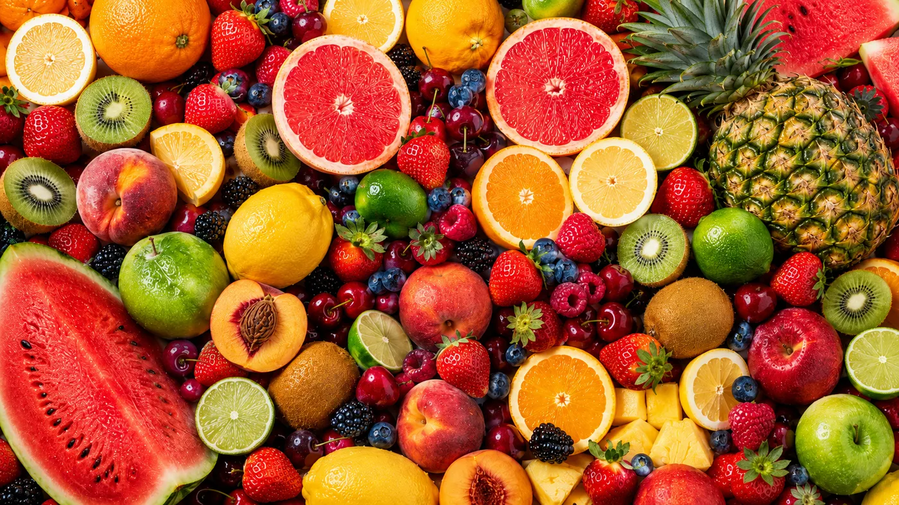
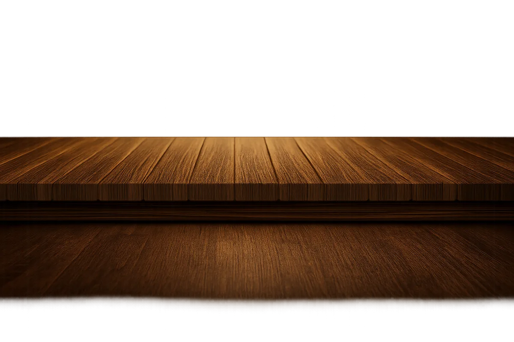
The same brand, shot for real. A 30-second Celsius spot filmed and edited for a cinematography class: slow-motion fruit, condensation shots, and product footage cut to commercial pacing.
Staged product photos shot alongside the filmed spot. Click any still to enlarge it.
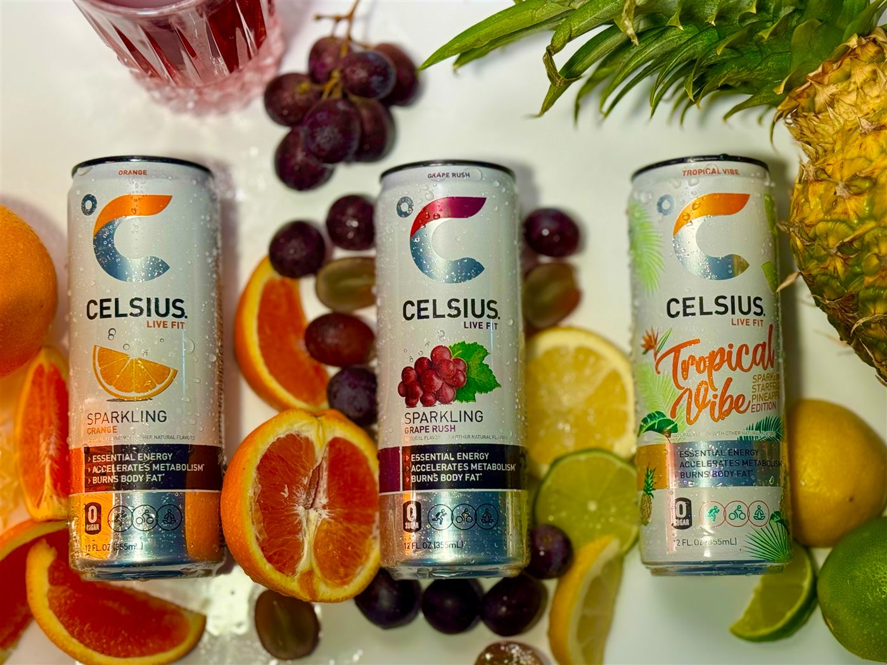
Celsius flavors staged with fruit and warm lighting.
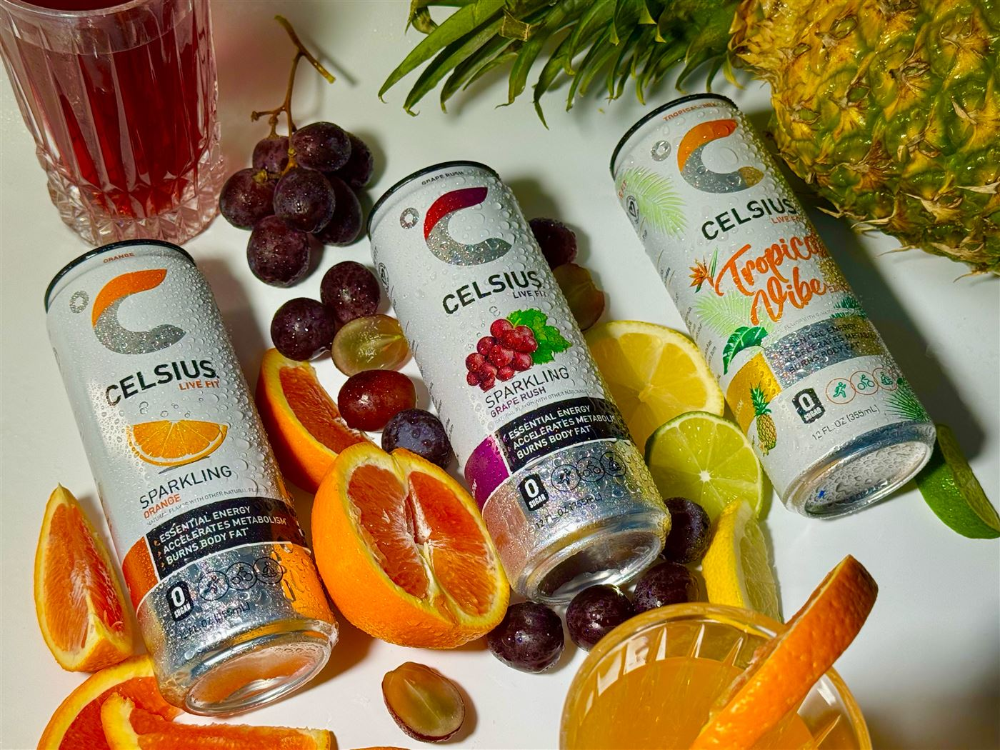
A closer angle focused on the condensation on the can.
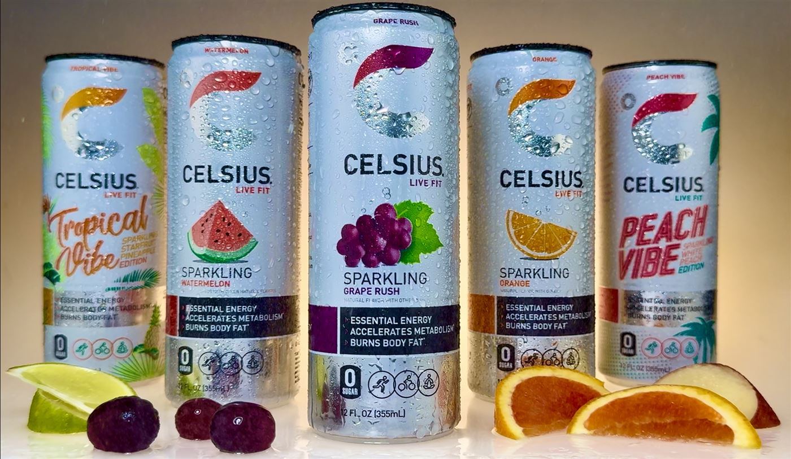
A product portrait of the label design and branding.
“I wanted to make something fresh and short but visually appealing for an energy drink I like.”
— from the storyboard introduction
{kind=link}
{kind=link}
{kind=link}
{kind=link}
{kind=link}
{kind=link}
{kind=link}
{kind=link}